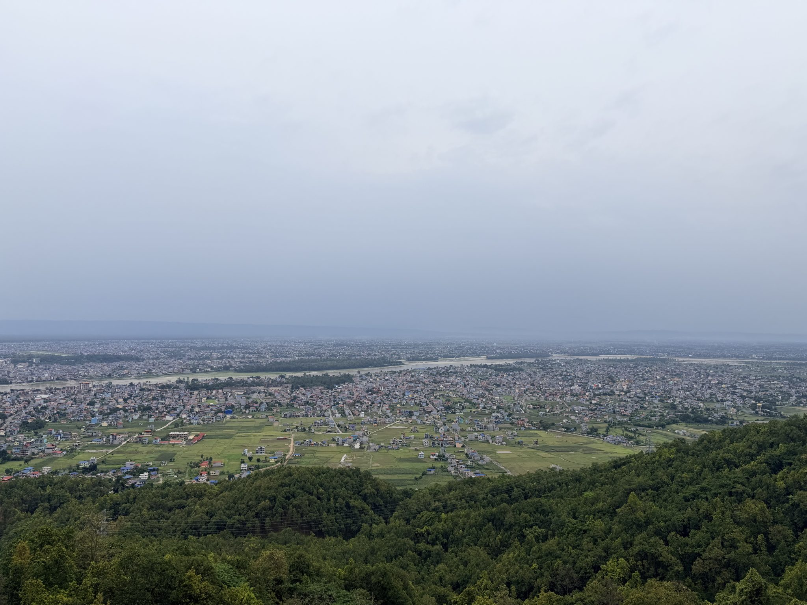
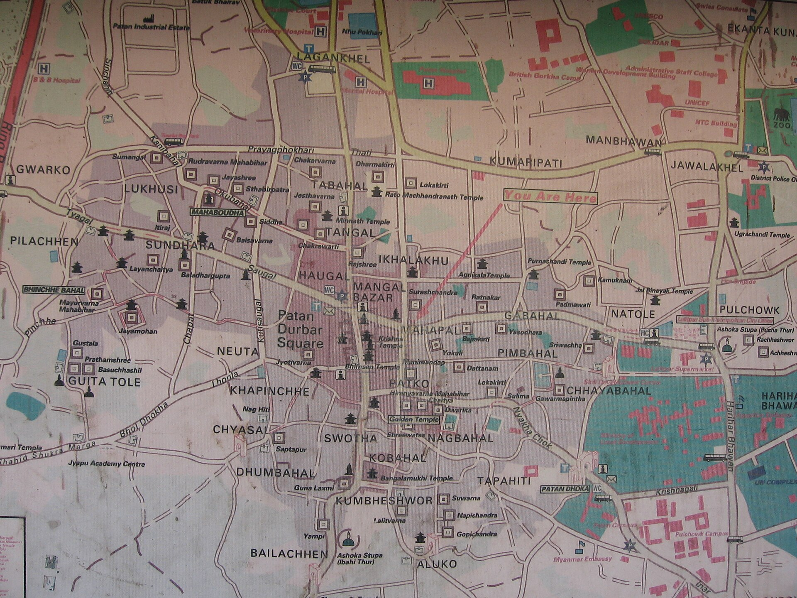

The React layer for GalliMaps.
Declarative map components and typed REST hooks for Nepal’s mapping platform — search, geocode, and route with or without a rendered map.
npm install react-gallimaps
27.7172° N, 85.3240° E
Three pieces, one package.
Components for the map, hooks for the REST APIs, and a typed client underneath. Use one layer or all three.
- Kathmandu Durbar Square 0.4 km
- Durbar Marg 1.8 km
- Patan Durbar Square 4.6 km
Sample results, shaped like the API response.
The whole pin is clickable. Adding markers restores the viewport.
const { run, data, loading } = useRoute();
run({
mode: "driving",
srcLat: 27.7172, srcLng: 85.324,
dstLat: 27.6736, dstLng: 85.325,
});Typed results. The next run aborts the previous request.
const client = new GalliApiClient({
accessToken: process.env.GALLIMAPS_TOKEN!,
});
const routes = await client.route({
mode: "walking",
srcLat: 27.7172, srcLng: 85.324,
dstLat: 27.7215, dstLng: 85.362,
});
routes[0].distance; // number, metresstatus— the HTTP statuscode— NETWORK, PARSE, or HTTPurl— token redactedbody— the raw response
Works in browsers, React Native, and Node 18+.
Built for Nepal.
Kathmandu is the default center, and the REST APIs order results by proximity. GalliMaps is Nepal’s mapping platform; this package gives it a typed React surface without hiding how it works.


Photographs: Kathmandu valley by shirishpoudel07 (CC0); Boudha Stupa by Nabin K. Sapkota (CC BY-SA 4.0, cropped); Patan map by Grentidez (CC BY-SA 4.0, cropped).
From install to a live map.
Three steps. The first two are the map; the third also works without it.
Give the provider your token once. The map and the REST hooks both read it from context, so you do not pass it around.
- One token for the map and every hook.
- Inject
fetchfor tests, Node, or React Native.
Add children for markers, polygons, and search. Inline props are safe: the map initializes once and keeps its viewport.
Gallimap,Marker,Polygon,Search.- Browser-only, SSR-safe; render it in a client component.
Search, geocode, and route anywhere below the provider. The REST layer needs no rendered map and no extra client setup.
- Autocomplete, search, and reverse geocode.
- Route and distance in driving, walking, or cycling.
import { GallimapsProvider } from "react-gallimaps";
export default function App() {
return (
<GallimapsProvider
accessToken={process.env.GALLIMAPS_TOKEN!}
>
<YourMap />
</GallimapsProvider>
);
}import {
Gallimap, Marker, Polygon, Search,
} from "react-gallimaps";
<Gallimap
accessToken={token}
center={[27.7172, 85.324]}
zoom={14}
>
<Marker position={[27.7172, 85.324]} color="red" />
<Polygon
name="durbar-square"
coordinates={[[27.7045, 85.3072], [27.705, 85.308]]}
/>
<Search lat={27.7172} lng={85.324} />
</Gallimap>import { useAutocomplete } from "react-gallimaps";
function SearchBox() {
const { query, setQuery, results, loading } =
useAutocomplete({ lat: 27.7172, lng: 85.324 });
return (
<>
<input
value={query}
onChange={(e) => setQuery(e.target.value)}
placeholder="Search Nepal"
/>
{loading && <span>Searching…</span>}
<ul>
{results.map((place) => (
<li key={place.id}>{place.name}</li>
))}
</ul>
</>
);
}Every API, one import.
Filter the surface area. Select a row to see what it does before you open the reference.
Reference, on one page.
Every prop, hook, and endpoint. The README has the long version.
<GallimapsProvider>
Context for the map instance, marker registry, and REST client.
accessToken, baseUrl, fetch, client
<Gallimap>
Map container; loads the plugin in the browser and guards SSR.
accessToken, center, zoom, clickable, onMapInit
<Marker>
Declarative pin. Renders nothing in the DOM itself.
position, color, draggable, onClick
<Polygon>
Polygon, LineString, or Point overlay.
name, coordinates, type, style
<Search>
Keyboard-operable combobox with REST and map-plugin modes.
onSelect, onResults, onError, placeholder, ariaLabel, className, lat, lng
useAutocomplete({ lat, lng })
Debounced suggestions; returns query, setQuery, results, loading, error, clear.
min 3 chars · 300 ms debounce
useSearch({ currentLat, currentLng })
Place search returning GeoJSON features with distance in metres.
results: SearchFeature[]
useReverseGeocode()
Imperative address lookup with data, error, loading, run, and reset.
run({ lat, lng })
useRoute() / useDistance()
Routing with geometry, or distance and duration only.
run({ mode, srcLat, srcLng, dstLat, dstLng })
useGallimapsAPI()
Imperative markers, polygons, and search against the map instance.
isReady, displayPinMarker, drawPolygon
useGalliClient()
The typed REST client from context, or a throwing/null variant.
useOptionalGalliClient()
client.autocomplete()
Suggestions for a partial query, ordered by proximity.
GET /search/autocomplete
client.search()
Full place search relative to a current location.
GET /search/currentLocation
client.reverseGeocode()
Coordinates to an address.
GET /reverse/generalReverse
client.route()
One or more routes between a source and destination.
GET /routing
client.distance()
Distance and duration only, without geometry.
GET /routing/distance
GalliApiError
Thrown by every client method and surfaced by the hooks.
status, code, url, body
isGalliApiError(error)
A type guard for catch blocks.
(error: unknown) => boolean
error.code
NETWORK for fetch failures, PARSE for invalid JSON, HTTP for non-2xx.
"NETWORK" | "PARSE" | "HTTP"
error.url
The request URL with the access token replaced by REDACTED.
string
error.body
The raw response body, when one was received.
unknown
Setup questions.
The things that trip people up first.
Yes, for the map and the REST APIs. Create one at gallimap.com and pass it to GallimapsProvider or Gallimap. Placeholder tokens do not load tiles or search results.
Yes. Wrap your tree in GallimapsProvider with an accessToken and call useAutocomplete, useSearch, useReverseGeocode, useRoute, or useDistance. No Gallimap component is required.
The REST client uses fetch and works in browsers, React Native, and Node 18+. The map is browser-only and SSR-safe: it renders nothing on the server, so use a client component or next/dynamic with ssr:false.
Fixed in 2.2.0. The plugin flies to every new pin at zoom 20; the wrapper now cancels that animation and restores the previous center and zoom. Marker.onClick also fires from the pin itself.
Yes. 2.2.0 compiles JSX with the classic runtime, so the build no longer imports react/jsx-runtime (React 16.14+). CI imports the package against React 16.8.6, and the development suite runs React 19.
Open an issue on GitHub with the package version, a minimal reproduction, and the console output. Security reports go through SECURITY.md instead of the public issue tracker.
Yes, for the map and the REST APIs. Create one at gallimap.com and pass it to GallimapsProvider or Gallimap. Placeholder tokens do not load tiles or search results.
Install it with
Requires a GalliMaps access token for map tiles, search, and routing. Get one at gallimap.com.
One line, no peer dependencies
npm install react-gallimaps
- Version
- 2.2.0
- License
- MIT
- React
- 16.8+
- Runtime deps
- None